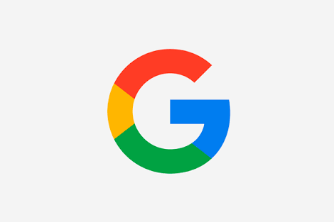

Amazon:
Es una compañia estadounidense de comercio electronico y servicios de computacion en la nube a todos los niveles con sede en la ciudad estadounidense de seattle, estado de washington, su lema es "From A to Z". Fue una de las primeras grandes compañias en vender bienes a traves de internet.
Gmail: Es un servicio de correo electronico gratuito proporcionado por la compañia Google Inc, a partir del 1 de abril de 2004. Tras mas de 5 años, el 7 de julio de 2009, el servicio de gmail junto con google calendar, google docs, dejaron su calidad de beta y pasaron a ser considerados productos terminados.
Google: Es un motor de busqueda de contenido en internet del mismo nombre, aunque ofrece tambien otros productos y servicios como el correo electronico llamdo gmail, su servicio de mapas "Maps", etc.
Tumblr: Es una plataforma de microbugueo que permite a sus usuarios publicar textos, imagenes, videos, enlaces, citas y audio a manera de tumblelog.